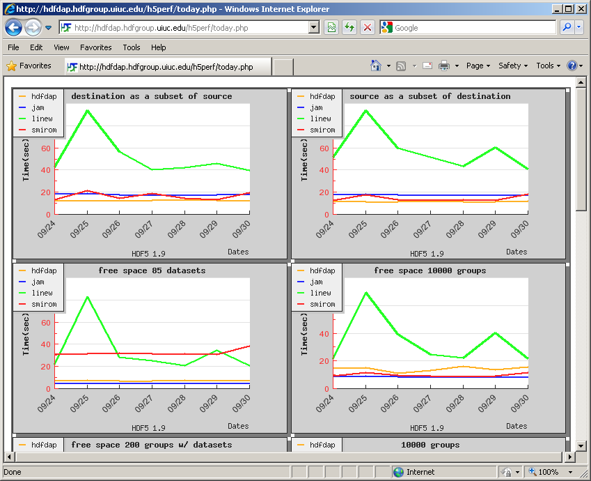

| HDF5 Performance Framework User Manual | ||
|---|---|---|
| <<< Previous | Testing HPF | Next >>> |
After two days of your cron job installation, it is possible to visualize your performance data. The reason is that any graph rendering by jpgraph requires two or more data points.
From the HPF main web page, click either "1.8.0" or "1.6.7" in "See today's graph for version 1.8.0 or 1.6.7." list item. You'll see a line graph that looks like below:

The graph above shows the results of four of five example benchmarks used in The HDF Group. (The fifth one is cut due to the screen size.) It shows the last 7 days of benchmark results from the four different machines in The HDF Group - hdfdap, kagiso, linew and smirom. As you can guess from the last date "02/17" at the bottom of the legend, the screenshot was taken on February 18.
Also from the HPF main web page, click "report" in "See today's warning report." You'll see a lot of warning messages in a table since you have neither 7 nor 30 days of data to compare against in MySQL database. After 7 days of your installation, you'll see that half of the warnings disappear. After one month, you'll see almost no warning messages in the table.
| <<< Previous | Home | Next >>> |
| Testing HPF | Up | HPF Maintenance |